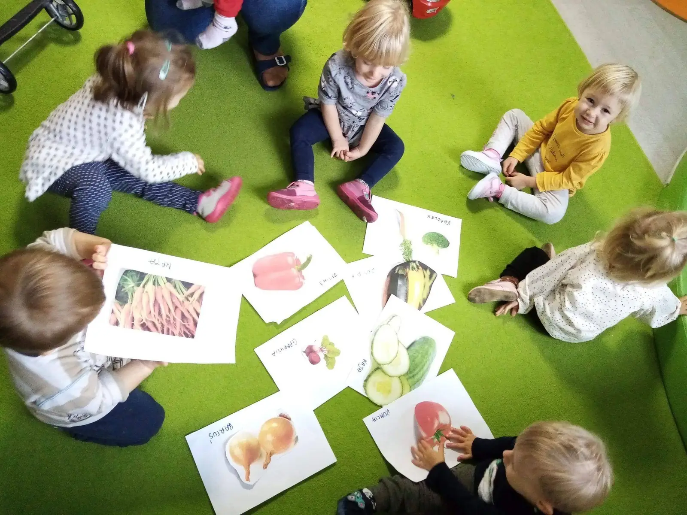
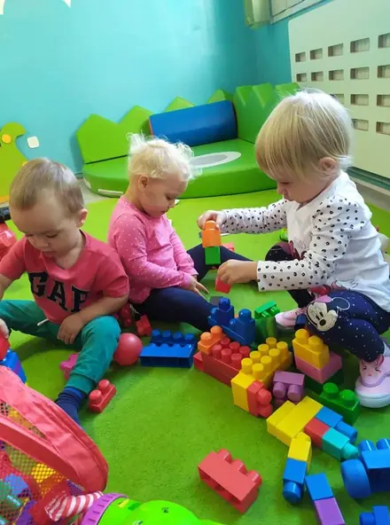
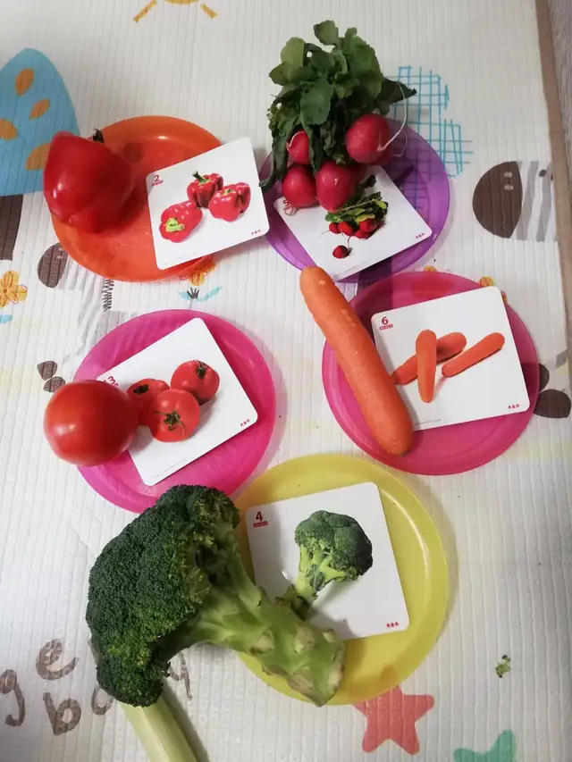
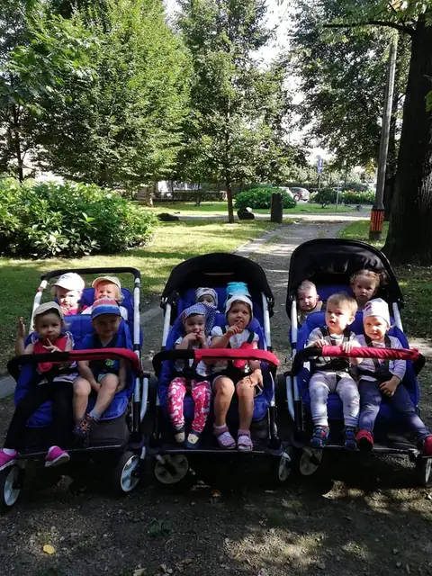
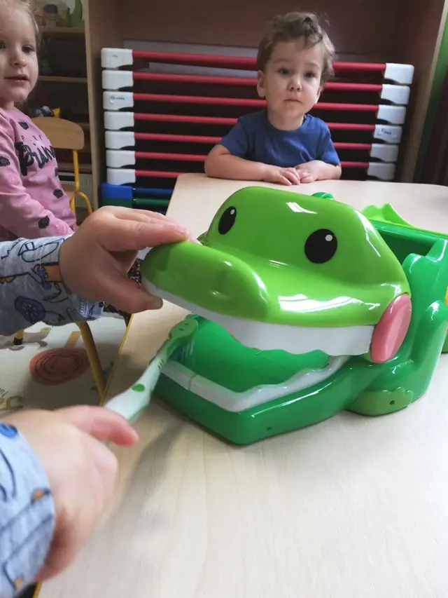

Żłobek w centrum Bielska-Białej - drugi dom dla Waszego Malucha
Dzieci od 20. tygodnia do 3 lat, pon.-pt. 6:30-16:30. Ciepła, domowa atmosfera i rytm dnia dopasowany do malucha.
Zapytaj o wolne miejsceAktywny Rodzic: 1 500 zł miesięcznie dofinansowania
Małe, kameralne miejsce, w którym dziecko czuje się bezpiecznie
Okruszek to żłobek, w którym nianiom zależy przede wszystkim na jednym: żeby maluch w czasie rozłąki z rodzicami czuł się jak w domu. Sala jest kolorowa i bezpieczna, a każdy dzień wypełniają zabawy dopasowane do wieku - plastyczne, ruchowe, muzyczne i edukacyjne.
Wśród rówieśników dzieci szybciej się otwierają i łatwiej przełamują pierwsze bariery: nocniczek, samodzielne jedzenie, obawę przed obcymi. Po czasie w Okruszku maluch spokojnie przechodzi do przedszkola.
- Od 2009 roku w ścisłym centrum, ul. Bohaterów Warszawy 6/1
- Od 20. tygodnia do 3 lat - także najmłodsze maluszki
- Pon.-pt. 6:30-16:30, elastyczne godziny przyprowadzania i odbioru
- Wpis do Rejestru żłobków i klubów dziecięcych nr 11
- Pozytywne opinie Straży Pożarnej i Sanepidu
- Cały rok, poza dniami wolnymi i dwutygodniową przerwą wakacyjną

Dzień w Okruszku
Stały rytm daje maluchom poczucie bezpieczeństwa. Najmłodszą grupę prowadzimy według indywidualnych potrzeb każdego dziecka - sen i posiłki wtedy, kiedy maluch ich potrzebuje.
Witamy maluszki przy wspólnej zabawie
Nocnikowanie, mycie rączek przed śniadaniem
Śniadanko
Zajęcia w sali albo na świeżym powietrzutematyczne, konstrukcyjne, przyrodnicze, plastyczne, muzyczne, językowe i ruchowe
Mycie rączek przed obiadem, nocnikowanie
Zupka
Bajki, wyciszająca muzyka i sen
Drugie danie
Zabawy świetlicowe, czekamy razem na rodziców



Opiekują się nimi nianie, które naprawdę lubią tę pracę
Dziećmi zajmują się nianie, którym zależy na ciepłej, domowej atmosferze. Znają każdego malucha po imieniu, wiedzą, kto zasypia z przytulanką, a kto potrzebuje chwili na przywitanie. Rodzice mogą przyprowadzać i odbierać dzieci w godzinach dopasowanych do swojej pracy.
Nie reklamujemy się w gazetach i portalach. Większość rodzin trafia do nas z polecenia znajomych.
Najlepszą reklamą jest zadowolony Rodzic i zadowolone Dziecko.
Tak wygląda u nas dzień
Klocki, dynia z liści, kosz owoców i pomarańczowe balony. Przesuń zdjęcia palcem albo myszą, kliknij, żeby powiększyć.
Więcej zdjęć na bieżąco na Facebooku żłobka.
Ile kosztuje miesiąc w Okruszku
Rodzice dzieci w żłobku mogą dostać z ZUS świadczenie Aktywny Rodzic. Wniosek składa rodzic, a dofinansowanie pokrywa większość czesnego.
- Czesne miesięczne1 800 zł
- Dofinansowanie Aktywny Rodzic- 1 500 zł
- Dopłata rodzica miesięcznie300 zł
Wpisowe jednorazowo 200 zł (za drugie dziecko 100 zł mniej). Posiłki z firmy cateringowej, płatne za wybrane posiłki, np. śniadanko 2,50 zł, dwudaniowy obiad 6,50 zł; dostępne menu z dietą.
Jak zapisać dziecko
Liczba miejsc jest ograniczona, dlatego najlepiej zapytać o wolne miejsce z wyprzedzeniem.
- Wypełnij kartę zgłoszenia dziecka (PDF).
- Przynieś ją osobiście albo wyślij skan na niania@okruszek.net.pl.
- Umówimy się na spotkanie w żłobku - zobaczycie salę i poznacie nianie.
- Podpisujemy umowę, a maluch zaczyna od spokojnej adaptacji.
Zapraszamy do Okruszka
Najprościej zadzwonić albo napisać. Odpowiemy na pytania o wolne miejsca, adaptację i dofinansowanie.
- Adresul. Bohaterów Warszawy 6/1
43-300 Bielsko-Biała - Telefon721 107 674
- E-mailniania@okruszek.net.pl
- Godzinyponiedziałek - piątek, 6:30-16:30